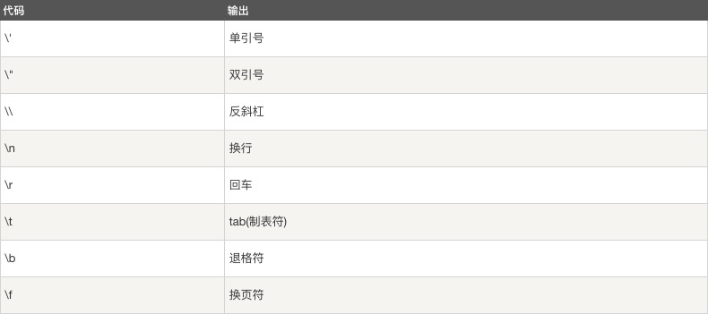

JavaScript 字符串
JavaScript 字符串用于存储和处理文本。
JavaScript 字符串
字符串可以存储一系列字符，如 "John Doe"。
字符串可以是插入到引号中的任何字符。你可以使用单引号或双引号：
实例
var carname = "Volvo XC60";
var carname = 'Volvo XC60';
你可以使用索引位置来访问字符串中的每个字符：
实例
var character = carname[7];
字符串的索引从 0 开始，这意味着第一个字符索引值为 [0],第二个为 [1], 以此类推。
你可以在字符串中使用引号，字符串中的引号不要与字符串的引号相同:
实例
var answer = "It's alright";
var answer = "He is called 'Johnny'";
var answer = 'He is called "Johnny"';
你也可以在字符串添加转义字符来使用引号：
实例
var x = 'It\'s alright';
var y = "He is called \"Johnny\"";
字符串长度
可以使用内置属性 length 来计算字符串的长度：
实例
var txt = "ABCDEFGHIJKLMNOPQRSTUVWXYZ";
var sln = txt.length;
特殊字符
在 JavaScript 中，字符串写在单引号或双引号中。
因为这样，以下实例 JavaScript 无法解析：
"We are the so-called "Vikings" from the north."
字符串 "We are the so-called " 被截断。
如何解决以上的问题呢？可以使用反斜杠 (\) 来转义 "Vikings" 字符串中的双引号，如下:
"We are the so-called \"Vikings\" from the north."
反斜杠是一个转义字符。 转义字符将特殊字符转换为字符串字符：
转义字符 (\) 可以用于转义撇号，换行，引号，等其他特殊字符。
下表中列举了在字符串中可以使用转义字符转义的特殊字符：

字符串可以是对象
通常， JavaScript 字符串是原始值，可以使用字符创建： var firstName = "John"
但我们也可以使用 new 关键字将字符串定义为一个对象： var firstName = new String("John")
实例
var x = "John";
var y = new String("John");
typeof x // 返回 String
typeof y // 返回 Object